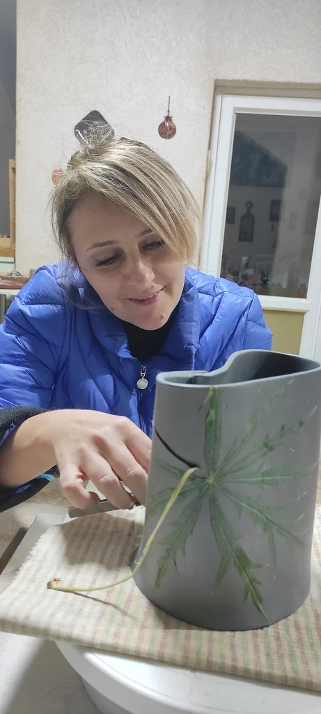
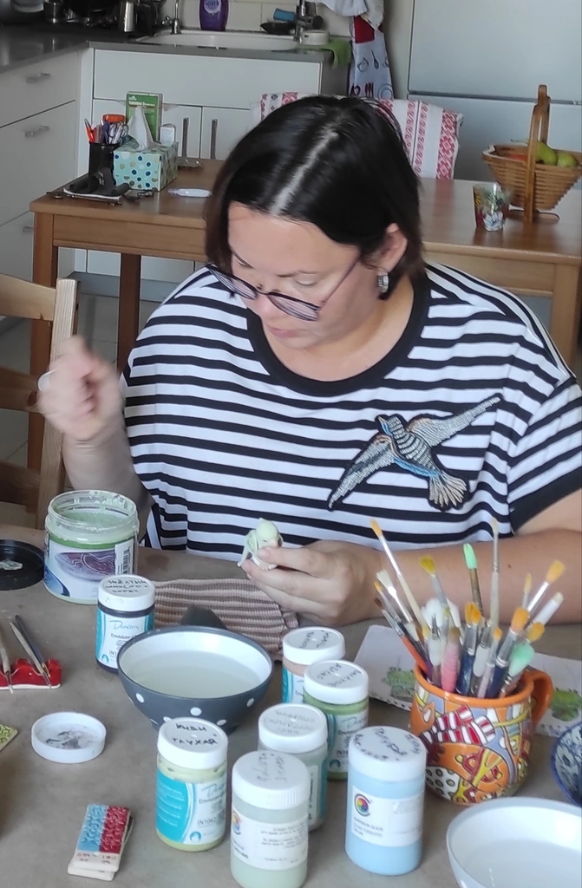

Кружок керамики для взрослых
Подарите себе радость на мастер-классе по керамике и создайте что-то особенное.
Я — Лика Вал. Моя керамика — это диалог с природой. В каждом изделии — дыхание глины, энергия рук и тишина, которая наполняет. Керамика для меня — это йога, только в материале. Это путь к балансу, к настоящему моменту и к себе.
Записаться на мастер-класс
